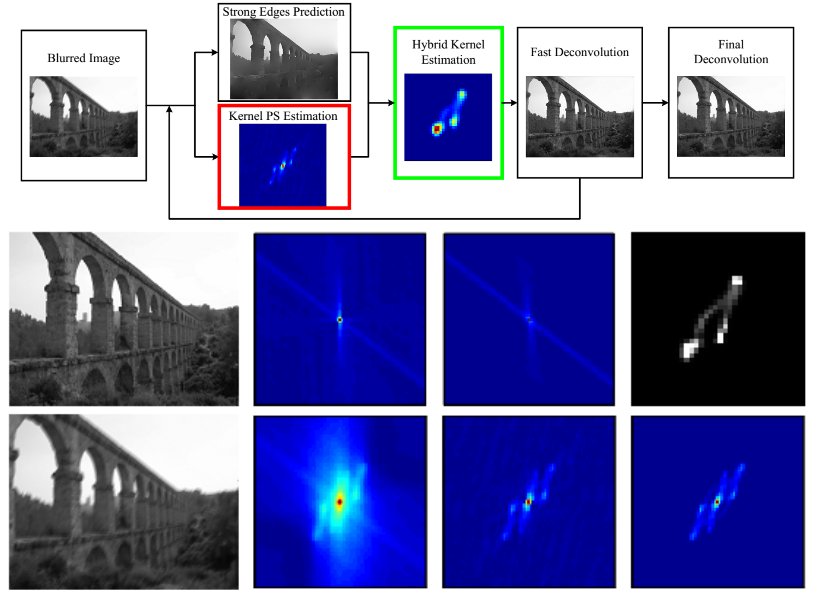
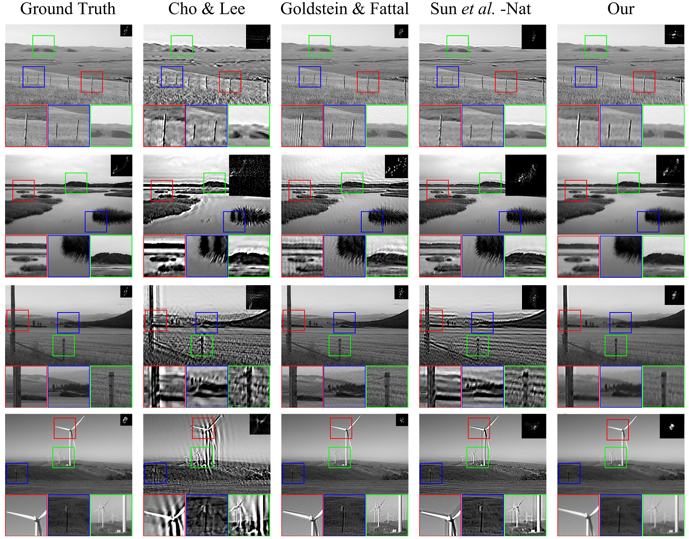
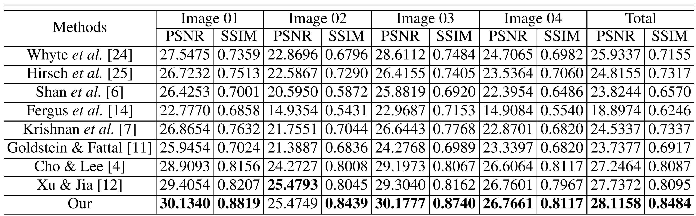
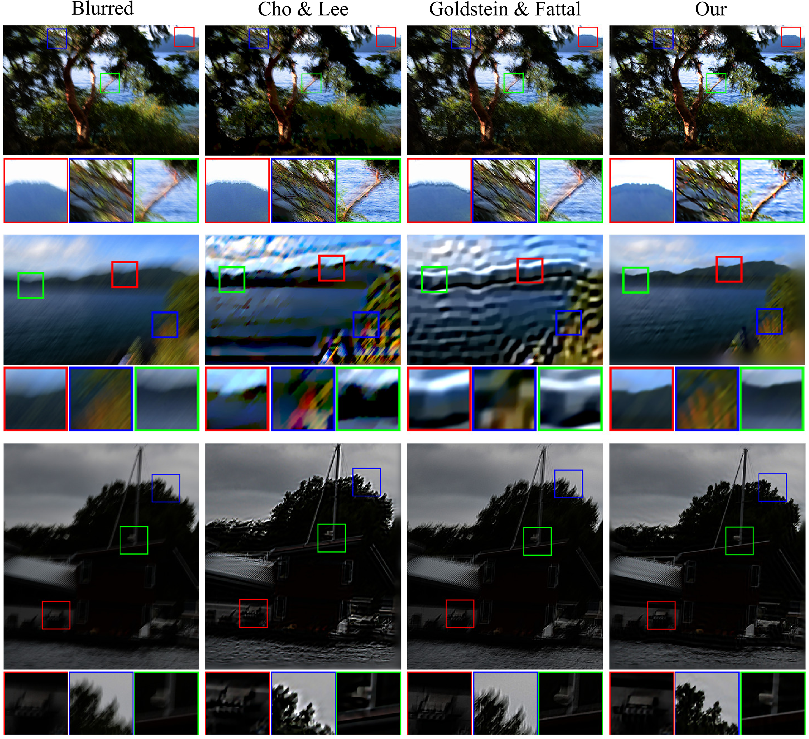

|
Hybrid Image Deblurring by Fusing Edge and Power Spectrum Information |
|
Tao Yue1, Sunghyun Cho2, Jue Wang2, Qionghai Dai1 1Deptartment of Automation, Tsinghua University 2Adobe Research |
|  |
|
Abstract Recent blind deconvolution methods rely on either salient edges or the power spectrum of the input image for estimating the blur kernel, but not both. In this work we show that the two methods are inherently complimentary to each other. Edge-based methods work well for images containing large salient structures, but fail on small-scale textures. Power-spectrum-based methods, on the contrary, are efficient on textural regions but not on structural edges. This observation inspires us to propose a hybrid approach that combines edge-based and power-spectrum-based priors for more robust deblurring. Given an input image, our method first derives a structure prediction that coincides with the edge-based priors, and then extracts dominant edges from it to eliminate the errors in computing the power-spectrum-based priors. These two priors are then integrated in a combined cost function for blur kernel estimation. Experimental results show that the proposed approach is more robust and achieves higher quality results than previous methods on both real world and synthetic examples. |
|
Results Figure 1. Qualitative comparisons on four synthetically blurred images from Sun et al.'s dataset [9]. From left to right: ground truth image and kernel, latent image and kernel estimated by Cho and Lee [4], Goldstein and Fattal [11], Sun et al. [9] and proposed method, respectively. Table 1. Quantative comparsion on Kohler et al.'s dataset [23].  Figure 2. Comparisons on real-world examples. |
|
Bibtex
@inproceedings{yue2014hybrid,
title={Hybrid image deblurring by fusing edge and power spectrum information},
author={Yue, Tao and Sunghyun Cho and Wang, Jue and Dai, Qionghai},
booktitle={European Conference on Computer Vision(ECCV)},
pages={79--93},
year={2014}
}
|
|
Publications
|